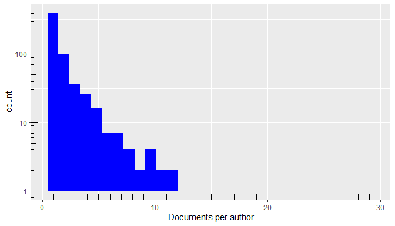
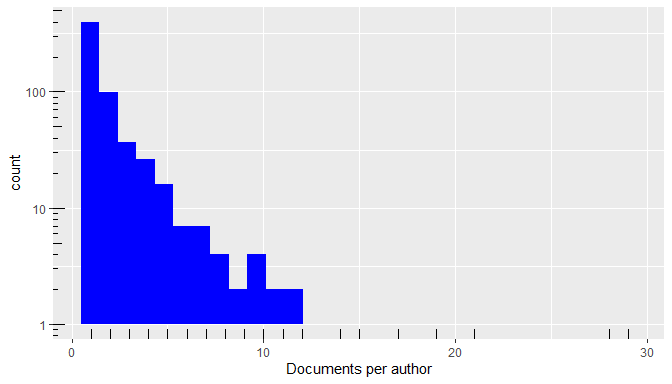
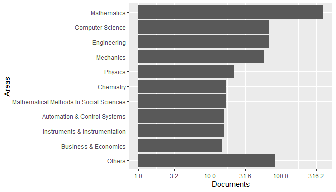
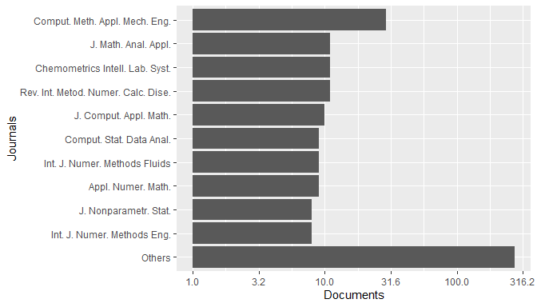
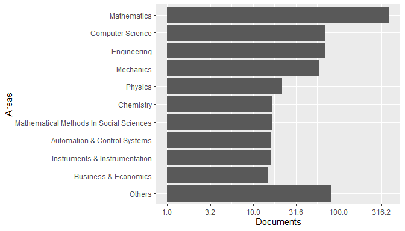
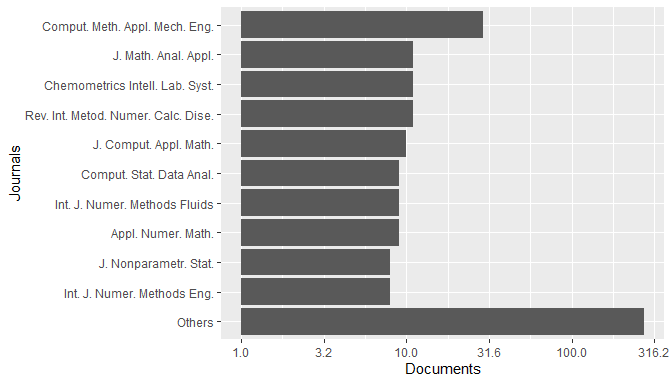
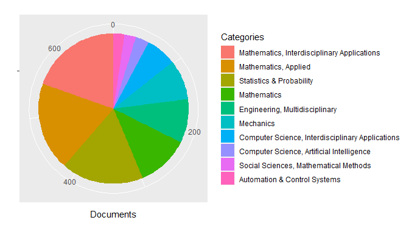
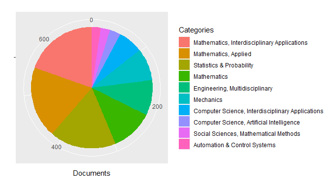
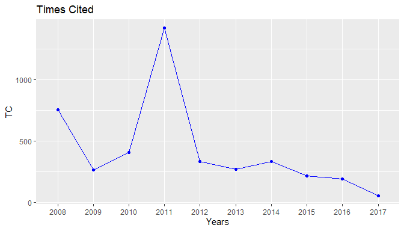
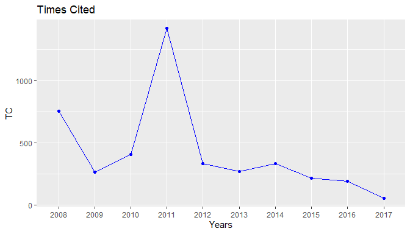

Analysis of Scientific Publication Data with scimetr
UDC Ranking’s Group
scimetr 0.2.3 : 2019-09-27
scimetr.RmdInstalación
Para instalar el paquete sería recomendable en primer lugar instalar las dependencias:
install.packages(c('dplyr', 'lazyeval', 'stringr', 'ggplot2', 'openxlsx', 'tidyr'))Como de momento no está disponible en CRAN, habría que instalar la versión de desarrollo en GitHub. En Windows bastaría con instalar la versión binaria del paquete scimetr_X.Y.Z.zip (disponible aqui), alternativamente se puede instalar directamente de GitHub:
# install.packages("devtools")
devtools::install_github("rubenfcasal/scimetr")Una vez instalado ya podríamos cargar el paquete:
library(scimetr)## scimetr: Analysis of Scientific Publication Data with R,
## version 0.2.3 (built on 2019-09-27).
## Copyright (C) UDC Ranking's Group 2017-2019.
## Type `help(scimetr)` for an overview of the package or
## visit https://rubenfcasal.github.io/scimetr.Carga de datos
Datos de ejemplo
En el paquete se incluyen dos conjuntos de datos de ejemplo correspondientes a la búsqueda en WoS por el campo Organización-Nombre preferido de la UDC (Organization-Enhaced: OG = Universidade da Coruna):
wosdf: año 2015.wosdf2: área de investigación ‘Mathematics’, años 2008-2017.
Variables WoS:
# View(wosdf2) # En RStudio...
variable.labels <- attr(wosdf, "variable.labels")
knitr::kable(as.data.frame(variable.labels)) # caption = "Variable labels"| variable.labels | |
|---|---|
| PT | Publication type |
| AU | Author |
| BA | Book authors |
| BE | Editor |
| GP | Group author |
| AF | Author full |
| BF | Book authors fullname |
| CA | Corporate author |
| TI | Title |
| SO | Publication name |
| SE | Series title |
| BS | Book series |
| LA | Language |
| DT | Document type |
| CT | Conference title |
| CY | Conference year |
| CL | Conference place |
| SP | Conference sponsors |
| HO | Conference host |
| DE | Keywords |
| ID | Keywords Plus |
| AB | Abstract |
| C1 | Addresses |
| RP | Reprint author |
| EM | Author email |
| RI | Researcher id numbers |
| OI | Orcid numbers |
| FU | Funding agency and grant number |
| FX | Funding text |
| CR | Cited references |
| NR | Number of cited references |
| TC | Times cited |
| Z9 | Total times cited count |
| U1 | Usage Count (Last 180 Days) |
| U2 | Usage Count (Since 2013) |
| PU | Publisher |
| PI | Publisher city |
| PA | Publisher address |
| SN | ISSN |
| EI | eISSN |
| BN | ISBN |
| J9 | Journal.ISI |
| JI | Journal.ISO |
| PD | Publication date |
| PY | Year published |
| VL | Volume |
| IS | Issue |
| PN | Part number |
| SU | Supplement |
| SI | Special issue |
| MA | Meeting abstract |
| BP | Beginning page |
| EP | Ending page |
| AR | Article number |
| DI | DOI |
| D2 | Book DOI |
| PG | Page count |
| WC | WOS category |
| SC | Research areas |
| GA | Document delivery number |
| UT | Access number |
| PM | Pub Med ID |
Se puede crear una base de datos con la función CreateDB.wos():
db <- CreateDB.wos(wosdf2, label = "Mathematics_UDC_2008-2017 (01-02-2019)")
str(db, 1)## List of 11
## $ Docs :'data.frame': 389 obs. of 26 variables:
## $ Authors :'data.frame': 611 obs. of 4 variables:
## $ AutDoc :'data.frame': 1260 obs. of 2 variables:
## $ Categories:'data.frame': 46 obs. of 2 variables:
## $ CatDoc :'data.frame': 866 obs. of 2 variables:
## $ Areas :'data.frame': 26 obs. of 2 variables:
## $ AreaDoc :'data.frame': 771 obs. of 2 variables:
## $ Addresses :'data.frame': 896 obs. of 5 variables:
## $ AddAutDoc :'data.frame': 1328 obs. of 3 variables:
## $ Journals :'data.frame': 150 obs. of 12 variables:
## ..- attr(*, "variable.labels")= Named chr [1:62] "Publication type" "Author" "Book authors" "Editor" ...
## .. ..- attr(*, "names")= chr [1:62] "PT" "AU" "BA" "BE" ...
## $ label : chr "Mathematics_UDC_2008-2017 (01-02-2019)"
## - attr(*, "class")= chr "wos.db"Cargar datos de directorio
Se pueden cargar automáticamente los archivos wos (tienen una limitación de 500 registros) de un subdirectorio:
dir("UDC_2008-2017 (01-02-2019)", pattern='*.txt')## [1] "savedrecs01.txt" "savedrecs02.txt" "savedrecs03.txt"
## [4] "savedrecs04.txt" "savedrecs05.txt" "savedrecs06.txt"
## [7] "savedrecs07.txt" "savedrecs08.txt" "savedrecs09.txt"
## [10] "savedrecs10.txt" "savedrecs11.txt" "savedrecs12.txt"
## [13] "savedrecs13.txt" "savedrecs14.txt" "savedrecs15.txt"Se pueden combinar los ficheros y crear la correspondiente base de datos con los siguientes comandos:
wos.txt <- ImportSources.wos("UDC_2008-2017 (01-02-2019)", other = FALSE)
db.txt <- CreateDB.wos(wos.txt)Sumarios
Sumario summary.wos.db()
## Number of documents: 389
## Authors: 611
## Period: 2008 - 2017
##
## Document types:
## Documents
## Article 360
## Correction 1
## Editorial Material 5
## Proceedings Paper 16
## Review 7
##
## Number of authors per document:
## Min. 1st Qu. Median Mean 3rd Qu. Max.
## 1.00 2.00 3.00 3.24 4.00 8.00
##
## Number of documents per author:
## Min. 1st Qu. Median Mean 3rd Qu. Max.
## 1.00 1.00 1.00 2.06 2.00 29.00
##
## Number of times cited:
## Min. 1st Qu. Median Mean 3rd Qu. Max.
## 0.0 1.0 3.0 10.9 9.0 1139.0
##
## Indexes:
## H G
## 24 54
##
## Top Categories:
## Documents
## Mathematics, Interdisciplinary Applications 134
## Mathematics, Applied 130
## Statistics & Probability 121
## Mathematics 77
## Engineering, Multidisciplinary 64
## Mechanics 59
## Computer Science, Interdisciplinary Applications 45
## Computer Science, Artificial Intelligence 20
## Social Sciences, Mathematical Methods 17
## Automation & Control Systems 16
## Others 183
##
## Top Areas:
## Documents
## Mathematics 389
## Computer Science 69
## Engineering 69
## Mechanics 59
## Physics 22
## Chemistry 17
## Mathematical Methods In Social Sciences 17
## Automation & Control Systems 16
## Instruments & Instrumentation 16
## Business & Economics 15
## Others 82
##
## Top Journals:
## Documents
## Comput. Meth. Appl. Mech. Eng. 29
## J. Math. Anal. Appl. 11
## Chemometrics Intell. Lab. Syst. 11
## Rev. Int. Metod. Numer. Calc. Dise. 11
## J. Comput. Appl. Math. 10
## Comput. Stat. Data Anal. 9
## Appl. Numer. Math. 9
## Int. J. Numer. Methods Fluids 9
## Int. J. Numer. Methods Eng. 8
## J. Nonparametr. Stat. 8
## Others 274
##
## Top Countries:
## Documents
## Spain 389
## USA 49
## France 32
## Italy 13
## Mexico 11
## UK 11
## Germany 10
## Canada 8
## China 8
## Belgium 7
## Others 52
Sumario por años summary_year()
res2 <- summary_year(db)
res2##
## Annual Scientific Production:
##
## Documents
## 2008 42
## 2009 28
## 2010 40
## 2011 37
## 2012 44
## 2013 40
## 2014 38
## 2015 39
## 2016 47
## 2017 34
##
## Annual Authors per Document:
##
## Avg Median
## 2008 2.880952 3.0
## 2009 3.321429 3.0
## 2010 3.350000 3.0
## 2011 3.378378 3.0
## 2012 2.818182 2.5
## 2013 3.375000 3.0
## 2014 3.236842 3.0
## 2015 3.051282 3.0
## 2016 3.574468 3.0
## 2017 3.470588 3.0
##
## Annual Times Cited:
##
## Cites Avg Median
## 2008 755 17.976190 5.0
## 2009 265 9.464286 6.0
## 2010 410 10.250000 5.0
## 2011 1422 38.432432 5.0
## 2012 335 7.613636 3.5
## 2013 271 6.775000 4.0
## 2014 336 8.842105 3.5
## 2015 215 5.512821 2.0
## 2016 192 4.085106 2.0
## 2017 55 1.617647 1.0Gráficos
Se emplea la librería ggplot2…
 


 
 



 

Filtrado
Se combinan las funciones get.id<Tabla>() (se puede emplear cualquier variable de la correspondiente tabla; multiple conditions are combined with &, see e.g. dplyr::filter()) con la función get.idDocs().
Funciones get
-
get.idAuthors(): buscar id (códigos) de autoresBuscar un autor concreto:
idAuthor <- get.idAuthors(db, AF == "Cao, Ricardo") idAuthor## Cao, Ricardo ## 16Buscar en nombres de autores:
idAuthors <- get.idAuthors(db, grepl('Cao', AF)) idAuthors## Cao, Ricardo Cao-Rial, Maria Teresa ## 16 69 -
get.idAreas(): Devuelve códigos de las áreasget.idAreas(db, SC == 'Mathematics')## Mathematics ## 16get.idAreas(db, SC == 'Mathematics' | SC == 'Computer Science')## Computer Science Mathematics ## 7 16 -
get.idCategories(): códigos de las categoríasget.idCategories(db, grepl('Mathematics', WC))## Mathematics ## 28 ## Mathematics, Applied ## 29 ## Mathematics, Interdisciplinary Applications ## 30 -
get.idJournals()códigos de las revistasijss <- get.idJournals(db, SO == 'JOURNAL OF STATISTICAL SOFTWARE') ijss## JOURNAL OF STATISTICAL SOFTWARE ## 134knitr::kable(db$Journals[ijss, ], caption = "JSS")JSS idj SO SE BS LA PU PI PA SN EI J9 JI 2796 134 JOURNAL OF STATISTICAL SOFTWARE English JOURNAL STATISTICAL SOFTWARE LOS ANGELES UCLA DEPT STATISTICS, 8130 MATH SCIENCES BLDG, BOX 951554, LOS ANGELES, CA 90095-1554 USA 1548-7660 J STAT SOFTW J. Stat. Softw. get.idJournals(db, JI == 'J. Stat. Softw.')## JOURNAL OF STATISTICAL SOFTWARE ## 134
Obtener documentos (de autores, revistas, …)
Los indices anteriores se pueden combinar en get.idDocs()
idocs <- get.idDocs(db, idAuthors = idAuthor)
idocs## [1] 10 16 23 33 40 56 128 183 187 196 210 220 269 286 295 312 315
## [18] 332 340 346 347 350 359 362 372 375 384 385Los índices de documentos se pueden utilizar como filtro p.e. en summary.wos.db().
Sumarios filtrados
Obtener sumario de autores:
summary(db, idocs)## Number of documents: 28
## Authors: 40
## Period: 2008 - 2017
##
## Document types:
## Documents
## Article 26
## Editorial Material 1
## Proceedings Paper 1
##
## Number of authors per document:
## Min. 1st Qu. Median Mean 3rd Qu. Max.
## 2.000 2.000 3.000 3.143 4.000 6.000
##
## Number of documents per author:
## Min. 1st Qu. Median Mean 3rd Qu. Max.
## 1.0 1.0 1.0 2.2 2.0 28.0
##
## Number of times cited:
## Min. 1st Qu. Median Mean 3rd Qu. Max.
## 0.00 1.00 2.00 3.25 4.25 14.00
##
## Indexes:
## H G
## 5 7
##
## Top Categories:
## Documents
## Statistics & Probability 26
## Mathematics, Interdisciplinary Applications 4
## Computer Science, Interdisciplinary Applications 3
## Economics 2
## Mathematical & Computational Biology 2
## Social Sciences, Mathematical Methods 2
## Automation & Control Systems 1
## Biochemistry & Molecular Biology 1
## Biology 1
## Business, Finance 1
## Others 4
##
## Top Areas:
## Documents
## Mathematics 28
## Computer Science 4
## Business & Economics 2
## Mathematical & Computational Biology 2
## Mathematical Methods In Social Sciences 2
## Automation & Control Systems 1
## Biochemistry & Molecular Biology 1
## Chemistry 1
## Instruments & Instrumentation 1
## Life Sciences & Biomedicine - Other Topics 1
## Others 1
##
## Top Journals:
## Documents
## J. Nonparametr. Stat. 4
## Comput. Stat. Data Anal. 3
## Comput. Stat. 3
## Ann. Inst. Stat. Math. 2
## Test 2
## Stat. Neerl. 1
## J. Multivar. Anal. 1
## J. Time Ser. Anal. 1
## Stat. Probab. Lett. 1
## J. Appl. Stat. 1
## Others 9
##
## Top Countries:
## Documents
## Spain 28
## Belgium 6
## France 2
## Germany 2
## Argentina 1
## Canada 1
## India 1
## Mexico 1
## Norway 1Obtener sumario de autores por años:
summary_year(db, idocs)##
## Annual Scientific Production:
##
## Documents
## 2008 7
## 2009 4
## 2010 4
## 2011 1
## 2012 2
## 2013 3
## 2014 1
## 2016 2
## 2017 4
##
## Annual Authors per Document:
##
## Avg Median
## 2008 2.428571 2.0
## 2009 3.750000 3.5
## 2010 3.500000 3.5
## 2011 4.000000 4.0
## 2012 3.000000 3.0
## 2013 3.666667 4.0
## 2014 2.000000 2.0
## 2016 2.500000 2.5
## 2017 3.500000 3.5
##
## Annual Times Cited:
##
## Cites Avg Median
## 2008 42 6.000000 6.0
## 2009 20 5.000000 3.0
## 2010 9 2.250000 2.0
## 2011 1 1.000000 1.0
## 2012 1 0.500000 0.5
## 2013 8 2.666667 2.0
## 2014 4 4.000000 4.0
## 2016 3 1.500000 1.5
## 2017 3 0.750000 0.5Indices de autores
Obtener índices de múltiples autores
TC.authors(db, idAuthors)## H G
## Cao, Ricardo 5 7
## Cao-Rial, Maria Teresa 1 1